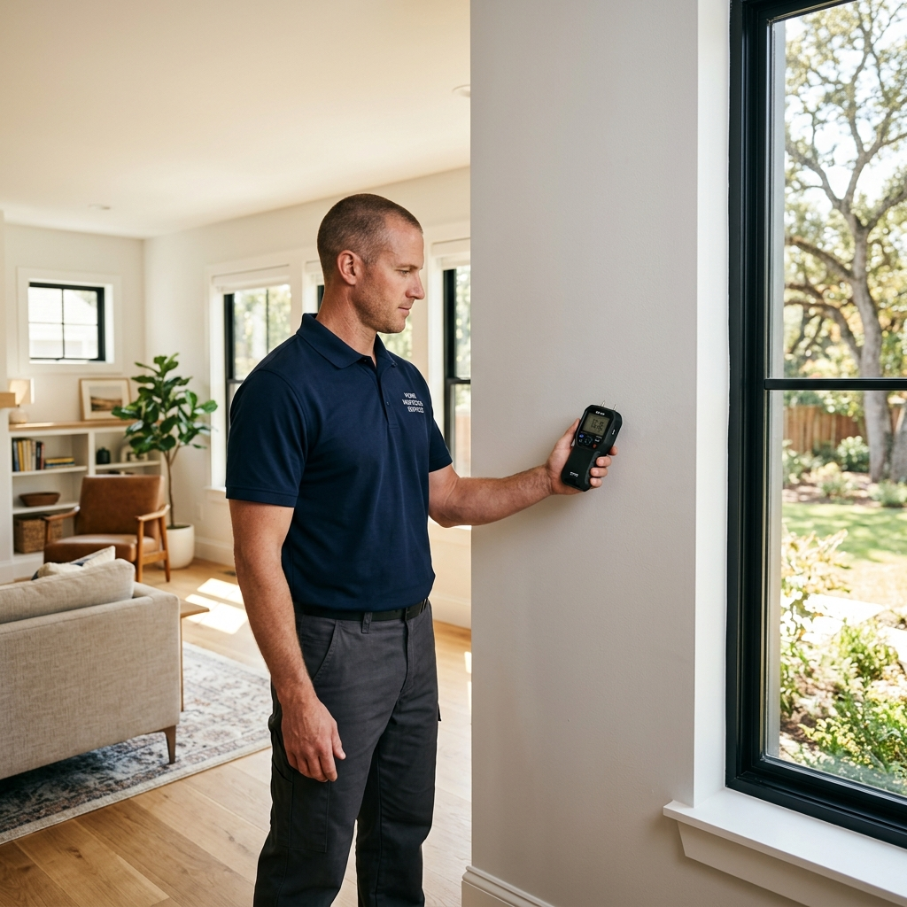
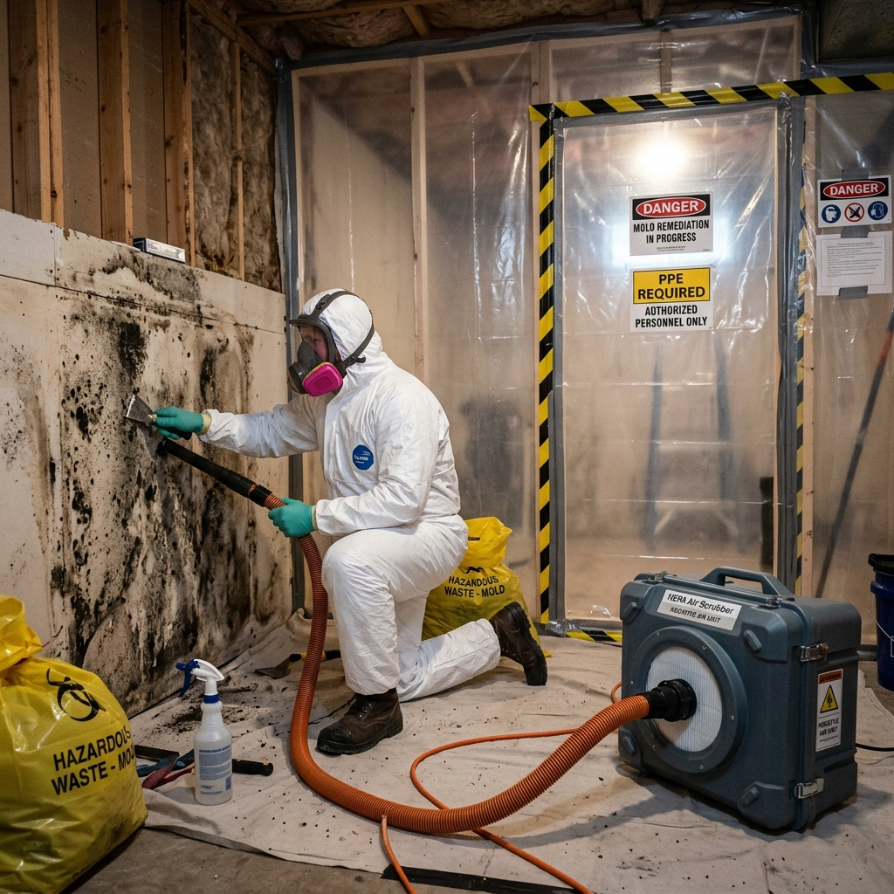

Professional Mold Removal Newport Beach
Mold can spread silently behind walls, affecting the air you breathe and the comfort of your home. We help Newport Beach homeowners restore a cleaner, healthier living environment through professional mold remediation.

Mold Remediation Newport Beach
Helping homeowners address moisture and mold problems takes more than removing visible growth. In Newport Beach coastal humidity can slow the drying process after leaks or water damage making a careful inspection an important first step. We begin by identifying hidden moisture taking moisture readings inspecting visible signs of mold and evaluating affected areas before creating a remediation plan based on the condition of the property.
From drywall and walls to flooring and crawl spaces every affected area is carefully assessed to understand how far moisture has spread and what steps are needed next. Every recommendation is based on real findings not assumptions helping homeowners make informed decisions improve indoor air quality and reduce the risk of mold returning.

Professional Mold Services
From initial inspection to complete remediation, we offer a full range of professional mold services for Newport Beach homeowners.

Mold Inspection
Hidden mold can develop behind walls under flooring and in other damp areas after moisture or water damage. A mold inspection helps identify visible mold growth hidden moisture and the source of the problem providing the information needed to create the right remediation plan.

Mold Remediation
After the source of moisture has been identified mold remediation removes affected materials and addresses the conditions that allow mold to spread. Correcting the underlying cause helps reduce the risk of mold returning and gives homeowners confidence that the problem has been properly addressed.

Black mold removal
When building materials stay damp for extended periods mold can continue to spread beyond the affected area. Removing damaged materials and correcting the underlying cause helps reduce the risk of it returning and affecting nearby materials.

Mold Testing
When the source or extent of mold is unclear mold testing can provide additional information through air or surface samples. The results help confirm whether mold is present and determine the most appropriate remediation approach when additional evaluation is needed.
Why Homeowners Choose Us
Every recommendation starts with a thorough inspection. We explain our findings clearly so you can make informed decisions before mold remediation begins.
Honest Assessment
Recommendations are based on careful inspection findings not assumptions so homeowners understand what their property actually needs before remediation begins.
Moisture Detection
Hidden moisture is identified before remediation begins helping address the source of the problem instead of only the visible mold.
Clear Communication
Inspection findings are explained in clear language and every question is answered so homeowners understand what was found and what happens next.
Detailed Reports
Moisture readings and detailed reports help homeowners understand the condition of their property before deciding on remediation.

Important Facts About Mold and Moisture
Knowing how mold develops and why moisture causes mold growth helps homeowners recognize problems early and make informed decisions.
Moisture Starts the Problem
Mold grows when moisture remains on building materials for extended periods. In Newport Beach coastal humidity can slow the drying process after leaks or water damage making moisture control an important first step before remediation begins.
Mold Is Not Always Visible
Mold can develop behind drywall under flooring and inside crawl spaces where trapped moisture creates the right conditions for growth.
Early Inspection Helps Limit Mold Growth
A timely inspection helps identify affected areas before mold spreads further helping determine the most appropriate next steps for remediation.
Frequently Asked Questions
Answers to common questions Newport Beach homeowners ask about mold inspection remediation and testing.
The cost of mold remediation in Newport Beach depends on the size of the affected area, the extent of mold growth, and the source of the moisture. A professional inspection helps determine the scope of the problem and provides a clear remediation plan with an accurate estimate.
Professional mold remediation helps identify the source of moisture, remove affected materials when necessary, and reduce the risk of mold returning. Every property is different, so a thorough inspection is the first step before remediation begins.
Look for a company that performs a thorough inspection, identifies the source of moisture, explains its findings clearly, and provides a remediation plan based on the condition of the property rather than assumptions.
The cost of a mold inspection varies depending on the size of the property and the areas being evaluated. An inspection includes identifying visible mold, checking for hidden moisture, and determining whether mold remediation is recommended.
A mold inspection involves evaluating visible mold, checking moisture levels, identifying affected areas, and determining the source of the problem. The findings help create a mold remediation plan based on the condition of the property.
Mold testing may be recommended when the source or extent of mold is unclear or when additional information is needed. Air or surface samples can help confirm mold presence and support the most appropriate mold remediation plan.
Take the First Step Toward a Mold Free Home
If you have noticed signs of mold or moisture, do not wait for the problem to get worse. Schedule a thorough inspection and receive a clear remediation plan for your home.